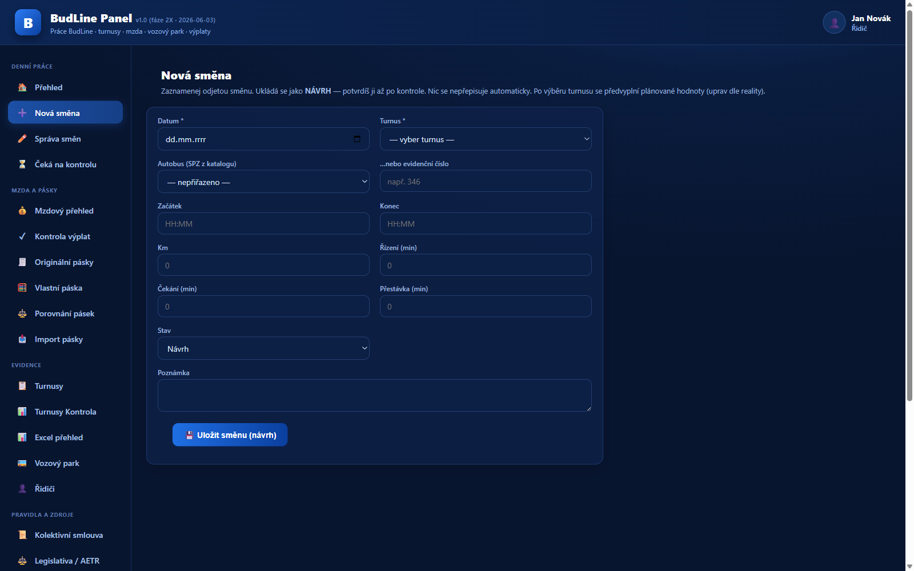
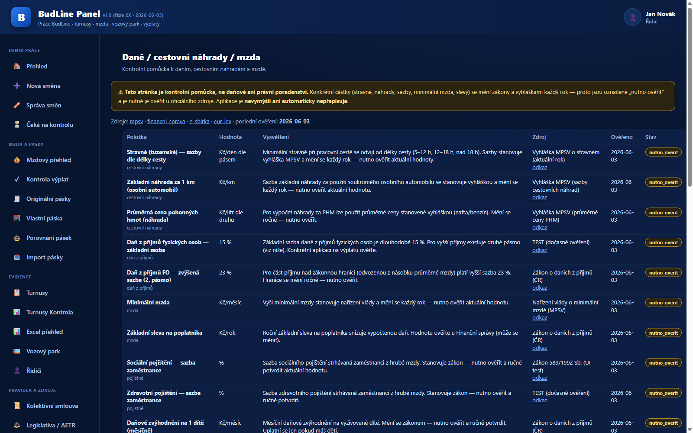
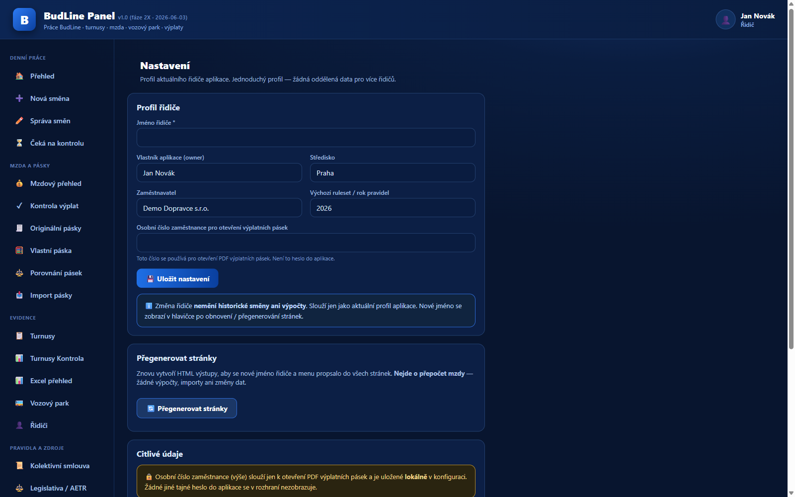

🚍BudLine Panel
Un'app per autisti di autobus che tiene sotto controllo turni, rotazioni e stipendio. Niente foglietti e calcoli a mente: registro i turni e l'app calcola quanto deve arrivare in busta paga — a fine mese verifico che torni tutto. Gira solo sul computer, senza cloud e senza account.
Python SQLite Windows v1.2.17 BETA
Cosa fa
Perché esiste: i turni di un autista sono sparsi tra rotazioni, supplementi per weekend e festivi, e a fine mese arriva una busta paga difficile da controllare. BudLine è un pannello semplice: registro i turni (o li leggo dalla carta del conducente), l'app li somma secondo le regole e mostra quanto deve uscire. La usiamo in due — io e un collega di lavoro.
Registro turni e rotazioni: ogni turno ha data, orari e tipo; l'app controlla la correttezza dell'inserimento (formato HH:MM, niente numeri negativi) e compone il riepilogo mensile.
Documenti per la busta paga: dai turni registrati l'app calcola la base per lo stipendio secondo le regole impostate (ore, supplementi). A fine mese basta confrontare con la busta paga — se qualcosa non torna, si vede subito dove.
Lettura della carta del conducente: dalla versione 1.2.13 l'app legge i dati direttamente dalla carta a chip tramite un lettore — meno trascrizioni manuali.
Tutto in locale: i dati restano sul computer (SQLite). Gli aggiornamenti si installano da soli in background; l'upgrade non sovrascrive mai dati e impostazioni dell'utente.
Funzioni chiave
- Riepilogo mensile dei turni — i turni registrati confluiscono in un riepilogo con i totali di presenza.
- Calcolo della busta paga — secondo le regole (ore, supplementi); confronto di fine mese con il cedolino.
- Import dalla carta del conducente — dati dalla carta a chip via lettore (dalla v1.2.13).
- MPV Live / Esercizio — esercizio in tempo reale dei turni di Semily: corse in marcia, dettaglio corsa (ritardo, occupazione), mappa delle posizioni dei veicoli e ritardi istantanei (dalla v1.2.14, sola lettura).
- Controlli di inserimento — validazione di orari e valori, così un errore di battitura non finisce nello stipendio.
- Aggiornamento automatico silenzioso — le nuove versioni si installano da sole; configurazione e dati restano.
- Senza cloud — nessun account, nessun server, dati solo sul computer.
Anteprime



Gli screenshot usano dati di esempio. Le anteprime di dashboard e stipendio arriveranno con un profilo demo completo — le buste paga reali non vanno sul web.
Download (beta)
⬇ Scarica installer (v1.2.17, Windows)
🔒 L'installer è protetto da password — la condivido di persona; sul web non c'è e non ci sarà.
🛡️ Windows può mostrare un avviso SmartScreen (installer beta non firmato). Se conosci l'app e la aspetti da me, clicca "Ulteriori informazioni" → "Esegui comunque".
⚠️ Chiudi l'app in esecuzione prima di installare.
Stato
Versione 1.2.17 BETA (giugno 2026). La usiamo attivamente in due; si sviluppa sulla base di buste paga reali. Beta = funziona, ma è ancora in rifinitura; l'installer non è firmato ed è protetto da password.